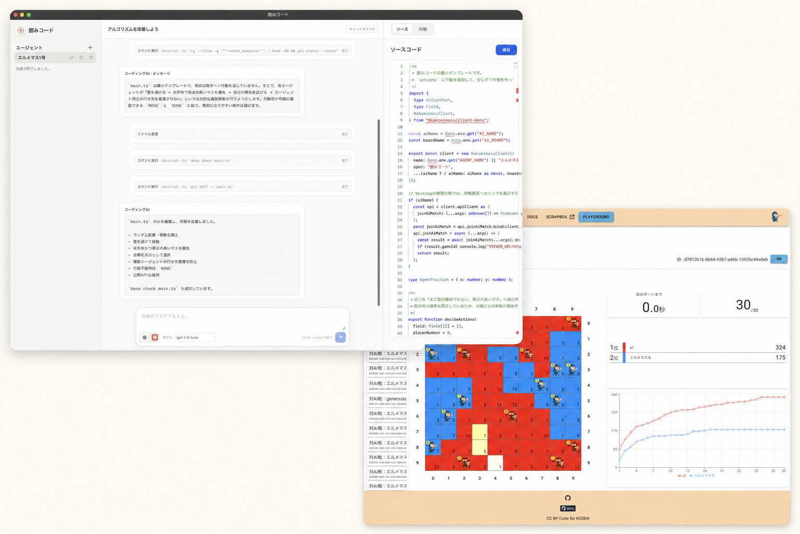

すぐに動かせる
Deno を入れたら、同梱のサンプル戦略でそのままスタート。最初から API を覚える必要はありません。

Deno を入れたら、同梱のサンプル戦略でそのままスタート。最初から API を覚える必要はありません。
作戦のアイデアを日本語で伝えるだけ。Codex や Claude Code と一緒に、コードを改善できます。
作戦ごとにエージェントを分けて保存。思いついたアイデアを並行して育て、いつでも対戦で試せます。
はじめての方も、公式の案内に沿って準備できます。
ターミナルで次のコマンドを実行します。
git clone https://github.com/kakomimasu/kakomi-code.gitmacOS / Linux では run.sh、Windows では run.bat を実行します。
「ランダムに配置して、ランダムに移動する作戦にしよう」と送ってみましょう。
作成したエージェントで、さっそく対戦を始められます。